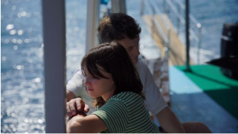
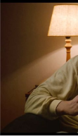
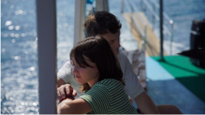
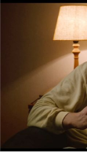
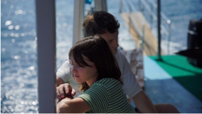
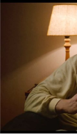

(1) 1.png)  
 aftersun
 “why can't we give ourselves one more
chance”
-Under Pressure por David Bowie e Queen
SINOPSE
Sophie reflete sobre a alegria e a melancolia das férias que ela tirou com seu pai 20 anos antes. Memórias reais e imaginárias preenchem as lacunas enquanto ela tenta reconciliar o pai que conheceu com o homem que desconhecia.

Paul Mescal
como Calum
Frankie Corio
como Sophie

Charlotte Wells
Diretora e Roteirista
resenha
Pensei muito em como eu iria escrever essa resenha, por que embora Aftersun seja um filme simples em sua produção ele é muito rico na questão sentimental. É um filme feito para todos aqueles que só pegaram os sinais depois que o momento passou, que ficam revisitando memórias e pensando em tudo o que deixaram passar. Sem me estender muito em spoilers, posso dizer que Aftersun é um filme repleto de nostalgia, e mais do que isso, saudade. Tanto a filmagem quanto o roteiro contribuem para nos tornar um espectador observador, não oniciente, que vai desvendando a mente do Callum junto com a Sophie, e por extensão com a Charlotte Wells tambem.
 1.png)
Depois de saber a história da diretora Aftersun fica impossível não associar a ficção com a realidade mesmo sabendo das diferenças, o que pesa muito mais o sentido do filme.........
mas essa parte eu deixo para você descobrir depois de assistir
fotografia da diretora Charlotte Wells
quando criança em uma viagem com seu pai
detalhes
Lançamento: 1 de dezembro de 2022
Duração: 1h 42min
Gênero: Drama
Direção: Charlotte Wells
Roteiro: Charlotte Wells
Disponível em: .png)
.png)
.png)
.png)